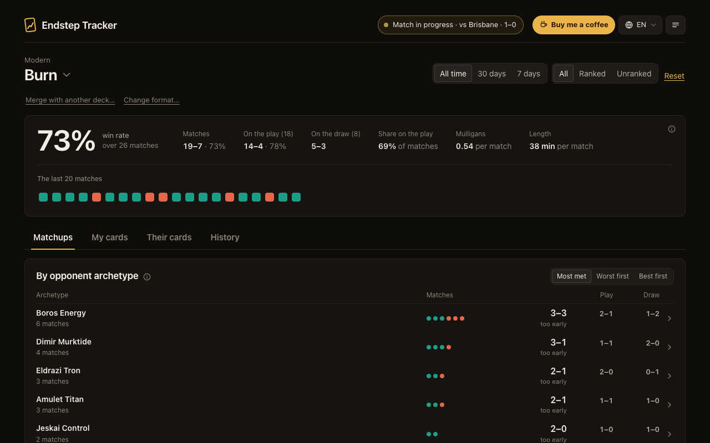
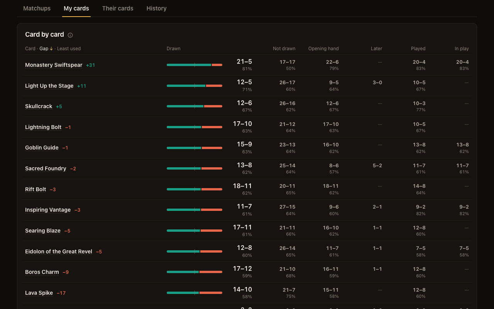
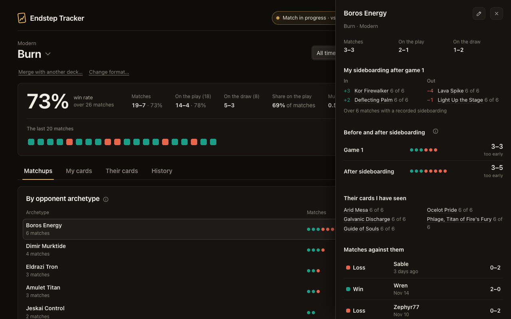

Win rates that mean something
By deck and by matchup, on the play and on the draw, for each version of your list.

Win rates by deck and by matchup, your sideboarding, the cards that win you games. Nothing to type, no account, everything stays in your browser.
Free and open source. On your computer, iPhone, iPad, or Android with Firefox. In English, French, Spanish, German, Italian and Brazilian Portuguese.
Won 2-1 against Dimir Murktide
Best of three. On the play, kept seven, four turns.
Burn against Dimir Murktide 7-4
Format, Bo1 or Bo3, score, play or draw, mulligans, opening hand, turns, life totals, length, the full game log, and your opponent's rating in ranked matches.
Recognized from the cards you saw, against endstep's own metagame. Named after the commander in Duel Commander. Correctable by hand.
Your record in the matchup, your usual side between games, and the opponents you met before.
By deck and by matchup, on the play and on the draw, for each version of your list.

For each card of your current list: your win rate in the games where you drew it, where you didn't, in your opening hand, and the cards you draw but rarely play.

Recorded between games, so you see your usual plan against each archetype, beside your record on the play and on the draw and the cards they play.

Also: import your past matches from your endstep history, CSV and JSON export, backups.
No account, and your matches never leave your browser: only anonymous usage statistics are sent, and you can switch them off. The extension reads the game messages endstep already sends to your browser, and asks the site only what its own pages ask (a player's rating, your history). It never plays or clicks for you.